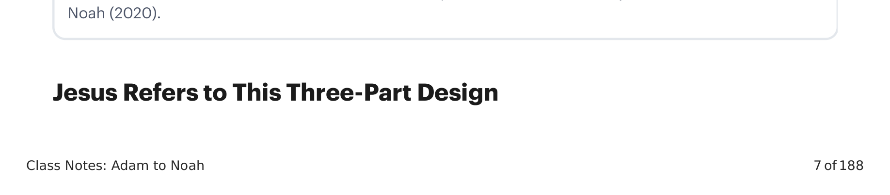
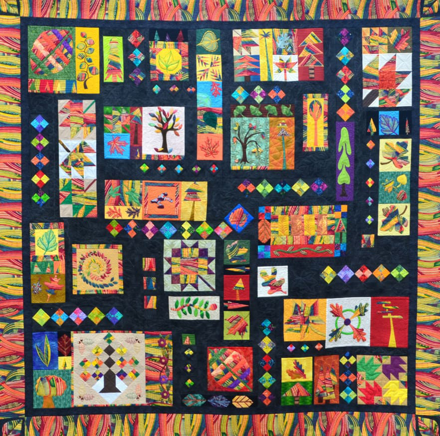

A Bíblia Hebraica é um conjunto de rolos do antigo Israel que foi formado em uma unidade editorial ao longo de sua composição e coleção. O projeto macro de três partes remonta a cerca do século III-II a.C. Essa ordem é preservada na tradição judaica moderna e é bem atestada nos textos judaicos do Segundo Templo e no Novo Testamento.The Hebrew Bible is a set of ancient Israelite scrolls that were formed into an editorial unity over the course of their composition and collection. The three-part macro design dates to somewhere in the 3rd-2nd century B.C. This order is preserved in modern Jewish tradition and is well attested in Second Temple Jewish texts and the New Testament.
| SeçõesSections | RolosScrolls |
|---|---|
| Torah (A Lei)(The Law) | Gênesis, Êxodo, Levítico, Números, DeuteronômioGenesis, Exodus, Leviticus, Numbers, Deuteronomy |
| Nevi'im (Os Profetas)(The Prophets) | Profetas Anteriores:Former Prophets: Josué, Juízes, Samuel, ReisJoshua, Judges, Samuel, Kings Profetas Posteriores:Latter Prophets: Isaías, Jeremias, Ezequiel, Oséias, Joel, Amós, Obadias, Jonas, Miquéias, Naum, Habacuque, Sofonias, Ageu, Zacarias, MalaquiasIsaiah, Jeremiah, Ezekiel, Hosea, Joel, Amos, Obadiah, Jonah, Micah, Nahum, Habakkuk, Zephaniah, Haggai, Zechariah, Malachi |
| Ketuvim (Os Escritos)(The Writings) | Salmos, Jó, Provérbios, Rute, Cântico dos Cânticos, Eclesiastes, Lamentações, Ester [As Megillot], Daniel, Esdras, Neemias, CrônicasPsalms, Job, Proverbs, Ruth, Song of Songs, Ecclesiastes, Lamentations, Esther [The Megillot], Daniel, Ezra, Nehemiah, Chronicles |

Quando Jesus alude à ordem da Bíblia Hebraica, ele pressupõe um projeto de três partes, o que concorda com outros autores judeus contemporâneos que aludem às seções ordenadas.When Jesus alludes to the order of the Hebrew Bible, he assumes a three-part design, which agrees with other contemporary Jewish authors who allude to the ordered sections.
Lucas 24:44 NVILuke 24:44 NIV
"Isto é o que eu lhes disse enquanto ainda estava com vocês: Era necessário que se cumprisse tudo o que está escrito a meu respeito na Lei de Moisés, nos Profetas e nos Salmos.""This is what I told you while I was still with you: Everything must be fulfilled that is written about me in the Torah of Moses, the Prophets, and the Psalms."O "bem-aventurado" do Salmo 1 é retratado como o Josué ideal visto em Josué 1:7-8, "aquele que medita na torá dia e noite", o que resulta em sucesso e um caminho próspero.The "blessed one" of Psalm 1 is portrayed as the ideal Joshua seen in Joshua 1:7-8, "one who meditates on the torah day and night," which results in success and a prosperous way.
Lucas 11:51 NVILuke 11:51 NIV
"Por isso, esta geração será considerada responsável pelo sangue de todos os profetas derramado desde o princípio do mundo, desde o sangue de Abel até o sangue de Zacarias, que foi morto entre o altar e o santuário.""Therefore, this generation will be held responsible for the blood of all the prophets that has been shed since the beginning of the world, from the blood of Abel to the blood of Zechariah, who was killed between the altar and the sanctuary."Abel foi morto por Caim em Gênesis 4, e Zacarias filho de Joiada foi morto por Joás em 2 Crônicas 24, o que corresponde à ordem do TaNaK.Abel was murdered by Cain in Genesis 4, and Zechariah son of Jehoiadah was murdered by Joash in 2 Chronicles 24, which corresponds to the TaNaK order.
Outros textos publicados neste período também se referem ao projeto de três partes do TaNaK.Other published texts in this time period also refer to the three-part design of the TaNaK.
"Muitos grandes ensinamentos nos foram dados através da Lei [Torá], e dos Profetas [Nevi'im], e dos demais que os seguem [Ketuvim] ... Assim, meu avô Yeshua dedicou-se especialmente à leitura da Lei, dos Profetas e dos demais rolos de nossos Ancestrais.""Many great teachings have been given to us through the Law [Torah], and the Prophets [Nevi'im], and the others that follow them [Ketuvim] ... So my grandfather Yeshua devoted himself especially to the reading of the Law and the Prophets and the other scrolls of our Ancestors."
Prólogo da Sabedoria de Ben SiraquePrologue to the Wisdom of Ben Sirach
"Os rolos de Moisés, as palavras dos profetas e de Davi.""The scrolls of Moses, the words of the prophets, and of David."
Manuscritos do Mar Morto (4QMMT)Dead Sea Scrolls (4QMMT)
"As leis e os oráculos dados por inspiração através dos profetas e dos Salmos, e os demais rolos pelos quais o conhecimento e a piedade são aumentados e completados.""The laws and the oracles given by inspiration through the prophets and the Psalms, and the other scrolls whereby knowledge and piety are increased and completed."
Filo de Alexandria (De Vita Contemplativa, 25)Philo of Alexandria (De Vita Contemplativa, 25)
A forma de três partes da Bíblia Hebraica não é simplesmente uma questão de arranjo. Em vez disso, os próprios livros foram desenhados para se encaixar nessa forma particular. Se você olhar as costuras editoriais das grandes seções (lembre-se de que a tecnologia era papiro ou couro), encontrará pistas de design intencional no início e no fim dessas seções.The three-part shape of the Hebrew Bible isn't simply a matter of arrangement. Rather, the books themselves have been designed to fit into this particular shape. If you look at the editorial seams of the major sections (remember the technology was papyrus or leather scrolls), you'll find intentional design clues at the beginning and ending of these sections.

Costura 1: As Frases Finais da Torá e as Frases de Abertura dos Nevi'imSeam 1: The Final Sentences of the Torah and the Opening Sentences of the Nevi'im
Deuteronômio 34:10-12: Antecipação de um profeta vindouro semelhante a Moisés, que foi prometido mas nunca veio.Deuteronomy 34:10-12: Anticipation of a coming Moses-like prophet who was promised but never came. Josué 1:1-9: O líder designado por Deus, Josué, que conduzirá o povo à terra prometida, deve meditar na torá dia e noite para encontrar sucesso.Joshua 1:1-9: God's appointed leader, Joshua, who will lead the people into the promised land, must meditate on the Torah day and night to find success.Costura 2: As Frases Finais dos Nevi'im e as Frases de Abertura dos KetuvimSeam 2: The Final Sentences of the Nevi'im and the Opening Sentences of the Ketuvim
Malaquias 4:4-6: Antecipação de um profeta vindouro semelhante a Elias, que chamará o povo de volta à Torá e restaurará os corações de Israel antes do Dia do Senhor.Malachi 4:4-6: Anticipation of a coming Elijah-like prophet who will call the people back to the Torah and restore the hearts of Israel before the Day of the Lord. Salmos 1-2: O justo que será vindicado no juízo final é aquele que medita na torá dia e noite para encontrar sucesso (Sl 1). Este justo é o futuro rei messiânico da linhagem de Davi, que é designado por Deus para governar as nações e vencer o mal de uma vez por todas (Sl 2).Psalms 1-2: The righteous one who will be vindicated in the final judgment is one who meditates on the Torah day and night to find success (Ps. 1). This righteous one is the future messianic king from the line of David, who is appointed by God to rule the nations and overcome evil once and for all (Ps. 2).Uma colcha é feita de muitos materiais pré-existentes e consiste em peças individuais (como a história do Éden ou as histórias de Abraão), coleções de peças (como as leis no Monte Sinai ou os Salmos), ou imagens inteiras (como os livros de Rute ou Ester). Esses materiais anteriores podem ser incorporados à coleção como estão, ou podem ser remodelados editorialmente para se ajustar ao novo contexto. Mas, e este é o ponto chave, é este novo contexto geral da colcha final que dá a cada peça individual seu significado quando vista à luz do todo. Independentemente do significado de qualquer peça individual, a colcha inteira é agora a moldura de referência apropriada para entender cada menor peça.A quilt is made of many pre-existing materials and consists of individual pieces (like the Eden story or the Abraham stories), collections of pieces (like the laws at Mount Sinai or the Psalms), or entire images (like the books of Ruth or Esther). These earlier materials can be incorporated into the collection as they stand, or they can be editorially reshaped to fit the new context. But, and this is the key point, it is this new overall context of the final quilt that gives each individual piece its meaning when viewed in light of the whole. Regardless of the meaning of any individual piece, the entire quilt is now the proper frame of reference for understanding every smaller piece.
No caso de Gênesis 2-5 (o foco desta aula), devemos nos perguntar a cada passo de nossa leitura: Qual é o significado pretendido pelos autores que formaram a forma final do TaNaK, tanto quanto podemos discerni-lo? Para os autores, Gênesis 1-11 formou uma introdução a todo o TaNaK. Nesta seção das Escrituras, encontramos os temas básicos, o vocabulário e os elementos da trama que serão desenvolvidos por todo o resto da coleção.In the case of Genesis 2-5 (the focus of this class), we must ask ourselves at every step of our reading: What is the meaning that is intended by the authors who formed the final shape of the TaNaK, as far as we can discern it? For the authors, Genesis 1-11 formed an introduction to the entire TaNaK. In this section of Scripture, we find the basic themes, vocabulary, and plot elements that will be developed throughout the rest of the collection.
Como a Bíblia Hebraica é como uma colcha de família? O que poderiam representar os retalhos, ou a colcha inteira?How is the Hebrew Bible like a family quilt? What might the patches, or the whole quilt, represent?